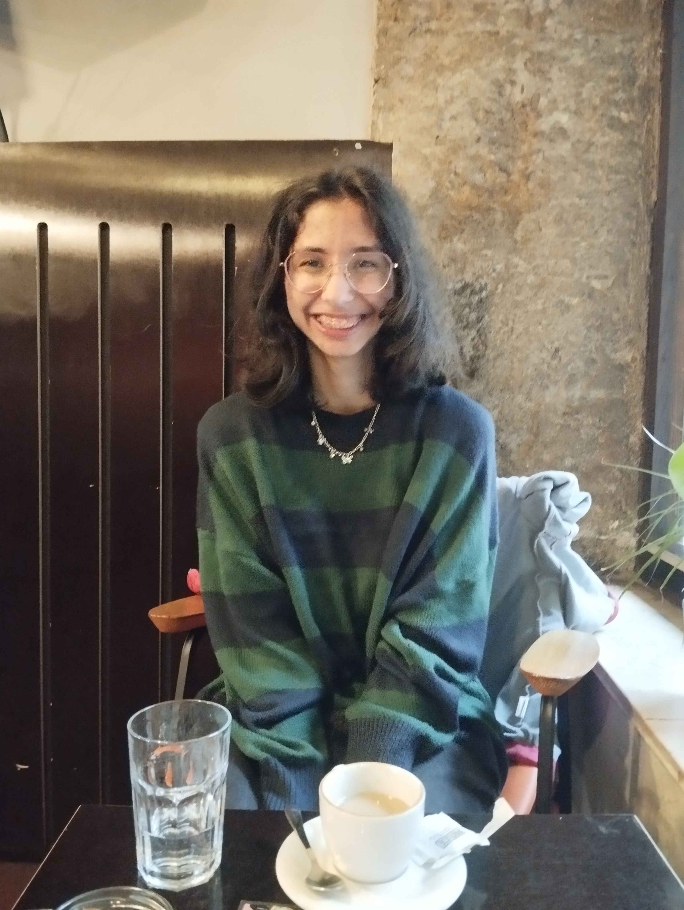
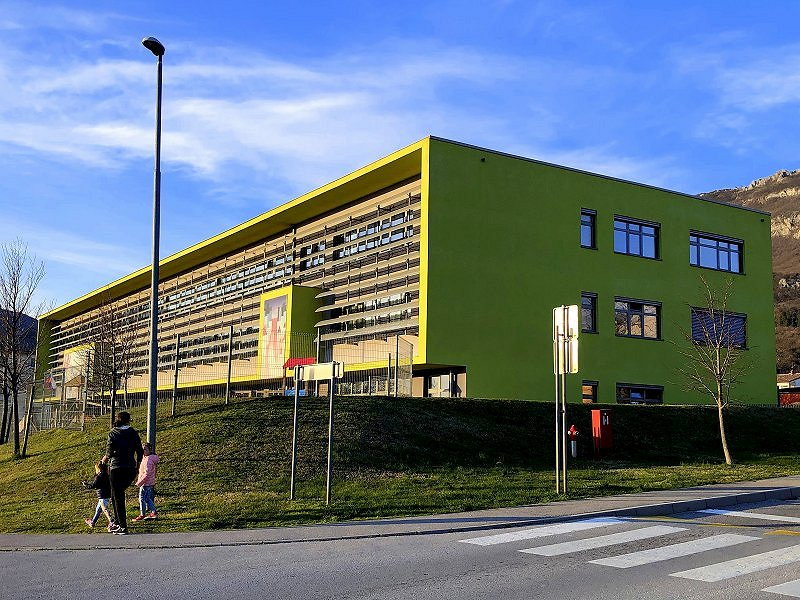
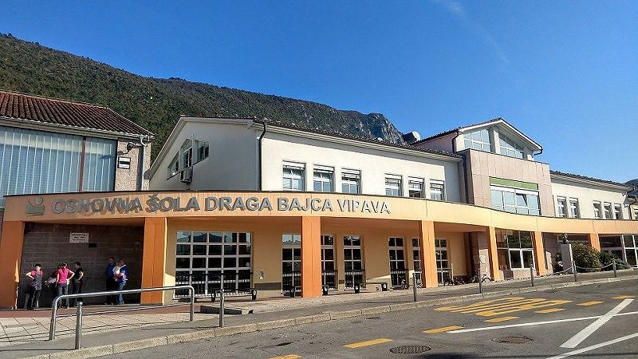
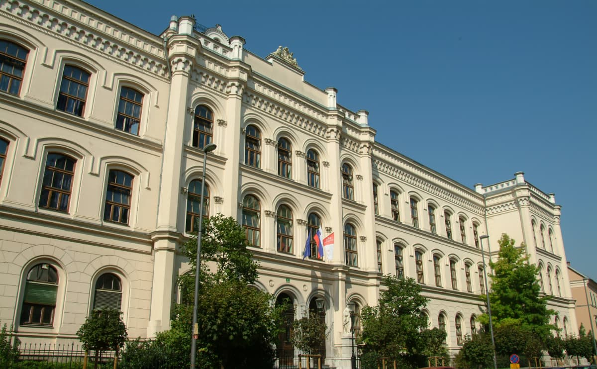

OSNOVNO

Pozdravljeni! Sem Laura Bavcon, dijakinja 4. letnika Elektrotehniško-računalniške strokovne šole in gimnazije Ljubljana,
smer Tehnik računalništva, usmeritev koder.
V prostem času rada berem, poslušam glasbo in občasno tudi programiram (šokantno, vem). Poslušam več različnih glasbenikov
kot npr. beabadoobee, Wolf Alice, Taylor Swift, Olivia Rodrigo, Gracie Abrams, Chase Atlantic, The Neighbourhood, Ari Abdul,
Bladee in drugi. Berem knjige različnih žanrov. Moja najljubša avtorica je Sylvia Plath. Imam tudi njen roman, Stekleni Zvon.
GLASBA
Moja najljubša glasbenica trenutno je Beatrice Laus, znana pod imenom "beabadoobee". Izdala je 3 albume in veliko EPjev.
Moj najljubši album, ki ga je ustvarila je Fake It Flowers, najljubši EP pa Loveworm. Ne morem se odločiti za najljubšo pesem.
Doma imam 3 CDje njenih albumov ter kaseto enega EPja. This is How Tomorrow Moves CD je tudi podpisan.
Imam kaseto EPja Patched Up. Imam tudi Limited Edition 7" Coffee gramofonsko ploščo.


KNJIGE

Moja najljubša knjiga. Govori o ženski Addie LaRue, ki naredi kupčijo s hudičem, da lahko živi za vedno, vendar se je nihče ne more zapomniti. Nekega dne pa se pojavi en gospod, ki si jo.


VESCINE
- C/C++
- HTML, CSS, JS
- Microsoft Office (Word, Excel, PowerPoint, Access,...)
- Linux (Mint, Arch), Windows
- SQL (MariaDB)
- PHP
- Osnove CISCO
IZOBRAZBA
 |
 |
 |
Osnovna šola Šturje, Ajdovščina (1. - 8. razred) |
Osnovna šola Draga Bajca Vipava, Vipava (9. razred) |
Elektrotehniško-računalniška strokovna šola in gimnazija Ljubljana |